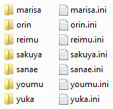
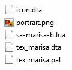
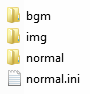

Use only ASCII characters in filenames. And please don't rely on the file system being case sensitive (is "ABC.txt" the same as "abc.txt"?).
All text files should be saved as UTF-8. This allows you to use non-latin characters like "博麗 霊夢".
In several configuration files we need to point to a texture. Textures are stored in a format that can be directly read by the video hardware in the Nintendo DS. There are several slightly different texture formats and we need to specify which format they are when we point to a texture. Therefore, a texture reference has the form base_filename:tex_format. Where base_filename is the name of the texture file without the file-extension and tex_format is one of: A3I5, A5I3, RGB256, RGBA. Textures consist of two files: base_filename.dta and base_filename.pal. In the tools folder is a Java program (TextureConverter.jar) that converts images to textures.
|  |
| chara folder contents |
|---|
Creating your own player-controlled characters is probably the easiest thing to modify. You can find all your installed characters inside the chara folder.
As you can see, a character definition is made up from a .ini file and a folder. The base filenames ("reimu", "marisa", etc.) correspond to the character's ID. Character IDs are unique names that make it possible to distinguish between different characters. When you create your own character, please use an ID that's likely to be unique (use "eva-lu-ator-91-reimu" rather than "my-reimu"). Character IDs should only consist of the following characters: [A-Za-z0-9_-]
The chara-id.ini file contains general information about the character: name, version, stats, etc. The chara-id folder contains data (like images) and script files. We'll first look at the chara-id file.
script_version=1.1.0 version=1.0.3 code=Marisa #personal info name=Marisa portrait=portrait.png desc=Golden eyes, blond hair, a braid on only one side of her face, carries a bamboo and straw broom. Wears a black witch's hat with a large pink ribbon, and a black and light pink outfit with a white apron. #stats shot_power_mul=1.0 speed=3.0 speed_focus=1.0 bombs=2 graze_range=10 hitbox=2 #other texture=tex_marisa:A3I5 bomb=default bomb_focus=master_spark
The file consists of simple "name=value" lines. You can also see some lines starting with a '#' character. These lines are comments and don't mean anything to the program.
The first two lines specify two important version numbers. Version numbers in TouhouDS should always be in x.y or x.y.z format (1.2 is ok, 3.0Alpha is wrong). The first version number (version) says some thing about the version number for the character. When you make a new character you usually set the version number to 1.0.0, then if you make an improvement to the character later on you increase the version number. This makes it possible to determine which one is newest when comparing two different versions of the same character (this is important for Repositories).
The code field is there to optionally specify a LUA table name for the player script. If the code field is not specified, the program looks for a "player_fire.pds" file (old script format).
The next part of the file (starting at #personal info) has three more properties:
| name | Human readable name of the character, usually similar to the character ID. Note that you can use non-latin characters for here, see: Character Encodings and Filenames |
| portrait | Filename pointing to a portrait image (a full-color PNG). The portrait is used on the character select screen. |
| desc | A short description of the character and its backstory. |
After the personal info, we have character stats:
| shot_power_mul | Shot power multiplier. Influences the relative power of shots fired by this player. |
| speed | Movement speed while unfocused. |
| speed_focus | Movement speed while focused. |
| bombs | Number of bombs. |
| graze_range | Bullets that pass by the player at a distance < graze_range cause a graze event. |
| hitbox | Hit circle radius. |
Finally, the properties under the #other comment:
| texture | A Texture Reference |
| bomb | The bombID of the type of bomb to use while bombing unfocused. |
| bomb_focus | The bombID of the type of bomb to use while bombing focused. |
|  |
| character data folder |
|---|
The character's data folder contains all data files (scripts/images) used by the character. This typically includes the following files:
| icon.dta | A texture (64x48, RGBA format) used for the selection icon on the Character Select screen. |
| *.lua | The player scripts (contain the definition for the LUA table specified in the player's code property). |
| (player_fire.pds) | A player fire script using the old (before v0.9) scripting language. Not used when a LUA player script is available. Contains 8 spells (fire[0-4] and fire_focus[0-4]) that determine the fire pattern for the character. |
| portrait.png | The portrait image (see portrait property in chara-id.ini file). |
| [chara-id].dta/.pal | The character's in-game texture. The individual frames of animation as well as the images for its bullets are subrects in this image. |
In TouhouDS all stages are packaged in bundles (games). A game contains a number of routes, and these routes contain the stages. Routes can be used to create difficulty settings, but also to create (unlockable) extra stages. Like most user-definable things in TouhouDS, games consist of a data folder and a .ini file:
script_version=1.1.0 version=1.0.3 name=Demo Game desc=Short paragraph describing the game goes here banner=banner.png
Like with the character .ini file the first two lines declare the release number and the script version used. The other properties are:
|  |
| game data folder |
|---|
| name | Human readable game name. |
| desc | Short description of the game or its backstory. |
| banner | An image path relative to the game data folder. The image is shown in the top screen during game selection. |
The game's data folder has two subfolders for common media (bgm for music, img for conversation images). In addition, the game's routes are stored in this folder. Every route has a .ini file and a data folder.
name=Normal locked=false
| name | Human readable route name. |
| locked | Use true or false to lock/unlock the route. |
Inside the route's data folder are its stages. Once again split into .ini files and data folders. Stages have fixed ID's, they should be named stage1, stage2, etc. numbered consecutively.
name=First Stage desc=This is a demo stage, you can change this text unlocks=extra,extra2 tex_boss=tex_boss_cirno:A3I5 tex_background=tex_background:RGB256
| name | Human readable stage name. |
| desc | Short stage description. |
| unlocks | Comma-separated list of route-ids. When the player finishes this stage, the specified routes will be unlocked. |
| tex_boss | Stage boss texture name and format. Works similarly to the texture property in chara-id.ini. |
| tex_background | Stage background texture. |
The stage's data folder contains the textures specified in the .ini file. In addition, it contains any non-standard sound effects used by its scripts. The stage scripts are the last thing stored in the stage data folder. The stage script can be split over multiple .lua files. More information about scripting can be found here.
Repositories are special download sites that can offer games or characters for download. The in-game download function uses these repositories to find things to download. You can edit repo.txt to add/edit/remove repositories. The file format is very simple, every line has the form "name;url".
You can easily create your own repositories by using the "CreateRepo.jar" program in the TouhouDS/tools folder. You point it to your TouhouDS install folder and it generates a repository containing all characters and games you have installed.
From v0.9 onwards it's possible to write scripts in LUA (manual).
Full information about scripting TouhouDS using LUA can be found here
Use the code property in chara-id.ini to specify a LUA table name. Declare that table in lua scripts stored in the character's data folder. Try to look at existing character scripts if you're unsure how to do something. More information can be found here.